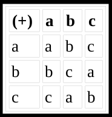
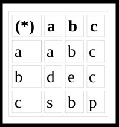
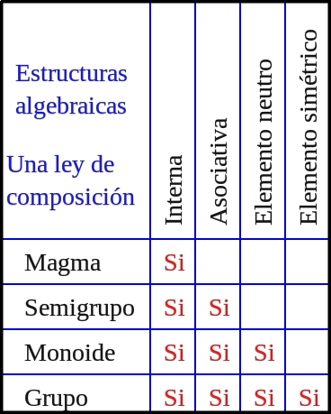
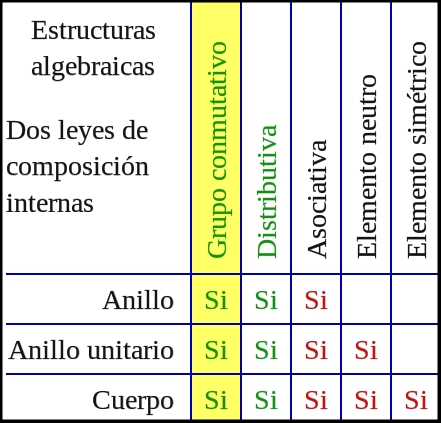

Definición:
En gran parte la utilidad de los conjuntos recide en que con ellos podemos "calcular". Es decir definir "operaciones", un ejemplo de un conjunto abstracto particularmente útil es el de los números, entonces, las operaciones que se definan con dicho conjunto producirian números.
Por ejemplo la suma de dos números naturales (1,2,3,4,..) es un número natural. Si consideramos esta operción como una función de dos variables y N es el conjunto de los números naturales.
¿Cuál es el dominio de la función?
¿Cuál es el rango o recorrido?
¿Son los mismos si consideramos la multiplicación?
¿Qué pasa si consideramos las operaciones inversas de las anteriores? (resta y división)
Los números y la suma no son los únicos conjuntos y operaciones que tienen la propiedad de que a un par de elementos del conjunto le corresponde 1 elemento del mismo conjunto. Por ejemplo:
 Operación definida (+), conjunto: {a,b,c}. Cumple con la propiedad.
 Operación definida (*), conjunto: {a,b,c}. No cumple con la propiedad.
Considere estos ejemplos y diga cuáles tienen la propiedad
a) T={desplazamientos rectilíneos de un punto en un plano} Operación de dos traslaciones t1, t2:realizar t1 y luego t2
b) C={hileras de letras}, operación: poner una hilera a continuación de la otra.
c) P={proposiciones lógicas}, operación: ^ (el "y" lógico).
Cuando ocurre que la operación entre dos elementos del conjunto nos vuelve a dar un elemento del conjunto se dice que el conjunto es cerrado respecto a la operación y se estaria hablando de la ley de composición interna.
Esta multiplicidad de ejemplos de conjuntos (C) en las que puede definirse una función f(CxC)->C ha llevado a estudiar este tipo de funciones (operaciones) en más detalle. En principio los conjuntos y funciones pueden definirse arbitrariamente como se ve en los ejemplos anteriores. Pero para que la operación tenga algún interés debe tener ciertas propiedades que se correspondan a relaciones importantes que se hallen en la realidad, es decir las operaciones deben ser “modelos matemáticos” de operaciones significativas con objetos reales.
Entonces podemos definir una estructura algebrica como una n-tupla (A1, A2, A3,..., An) donde A1 es un conjunto dado no vacío y {A2, A3, ...,An} el conjunto de opreaciones aplicables a los elementos de dicho conjunto.
Clasificación:
Las estructuras algebraicas se clasifican según las propiedades que cumplen las operaciones sobre el conjunto dado. En estructuras algebraicas más elaboradas, se definen varias leyes de composición.
Con una ley de composición tenemos las siguientes estructuras que a su vez cumplen con las siguientes propiendades:
 - Nota de interés
Explicacion de grupos
Segun la explicación antes vista diga cuales conjuntos forman un grupo con las operaciones indicadas. Indicar cuál es el elemento neutro.
Números naturales. Operación +
Números enteros. Operación +
Números enteros. Operación x
Números fraccionarios. Operación x
Rotaciones de una figura en el plano. Operación a(+)b: hacer primero rotacion de ángulo a y luego la de ángulo b.
Números con 1 decimal. Operación: multiplicación seguida de redondeo a un decimal. (considere 0.2x0.8x10.5)
Rotaciones de una figura en el espacio de 3 dimensiones
Matrices de 2x2. Operación: producto de matrices:
Los conjuntos con la operación intersección ( ) (y con la operación Unión?).
Los polinomios de grado <= n con la operación “suma de polinomios”.
Las proposiciones lógicas con la operación ^.
¿Qué pasa si consideramos sólo las matrices no singulares? (con inversa).
Un grupo se llama conmutativo o abeliano si, además de las operaciones indicadas en 5, la
operación (+) es conmutativa.
Es decir: a (+) b = b (+) a
¿Cuales de los grupos vistos snteriormente es abeliano?
Entre muchos entes matemáticos de un conjunto existen dos operaciones que pueden relacionarse entre ellas. Indique las que conozca en los ejemplos vistos. (formen o no un grupo)
Con dos leyes de composición tenemos las siguientes estructuras que a su vez cumplen con las siguientes propiendades:
 - Nota de interés:
Explicacion de anillos